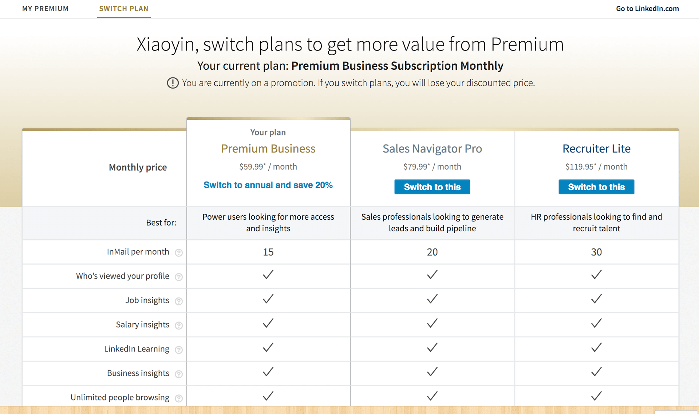
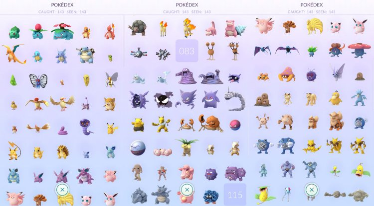

- 00 开篇词 打造千万用户的世界级产品.md
- 01 什么是优秀的产品经理？.md
- 02 硅谷的产品经理是什么样子的？.md
- 03 科技巨头和初创公司的产品经理有什么不同？.md
- 04 产品经理和项目经理有什么区别？.md
- 05 硅谷产品经理每天在做什么？.md
- 06 硅谷产品经理们都来自什么背景？.md
- 07 如何寻找用户需求？.md
- 08 目标客户和用户画像.md
- 09 手把手教你写用例： 优化微信加好友的功能.md
- 10 什么是最小化可行产品（MVP）？.md
- 11 案例：产品发布之前出了乱子，如何权衡取舍？.md
- 12 制定产品成功指标.md
- 13 如何撰写产品需求文档？.md
- 14 如何用数据做出产品决定？.md
- 15 如何组织有效的会议？.md
- 16 如何和工程师有效沟通？.md
- 17 如何与设计师有效沟通？.md
- 18 如何搞定A_B测试？.md
- 19 增长黑客的核心公式.md
- 20 想要增长，你的团队需要高效的工作流.md
- 22 硅谷高管的UIE（Understand, Identify, Execute）增长论.md
- 23 增长的核心在于减少用户阻力.md
- 24 产品增长的代价，如何权衡取舍？.md
- 25 三分靠策略 七分靠执行.md
- 26 为什么加班很久但是没成果？产品开发流程有问题.md
- 27 如何激励和管理比你资深的工程师、设计师？.md
- 28 产品经理的晋升秘密.md
- 29 你需要一个产品路线图.md
- 30 如何制定产品优先级 ？.md
- 31 好的产品经理和卓越的产品经理.md
- 32 产品经理面试考察的是什么？.md
- 33 如何提升产品感（product sense）？.md
- 34 如何提升产品经理的综合素质？.md
- 35 非计算机专业也能做产品经理？.md
- 36 模拟一场硅谷的产品经理面试.md
- 尾声 每个世界级的产品都有其使命.md
- 新书首发 《硅谷产品：36讲直通世界级产品经理》.md
19 增长黑客的核心公式
作为即将开始的产品增长系列的第一篇文章，这篇文章的主旨是如何利用增长黑客实现产品的增长。
“增长黑客”这个词最近特别火，这个概念最初是由互联网创业者肖恩 · 埃利斯（Sean Ellis）提出的，他希望能够做到“把钱花在刀刃上”，创新性地实现增长。近几年，硅谷的各大公司都已经建立了自己的增长黑客部门。
很多人听到这个词，觉得既然是“黑客”，一定是潜入什么神秘的系统，利用看不见摸不着的、神秘的方式实现增长，事实是否真是如此？今天我们就一起来看看到底什么是增长黑客，以及如何利用增长黑客实现产品增长。
什么是增长黑客
以前的产品增长主要靠砸钱，而增长黑客是用技术和数据来分析如何增长，找到影响增长的切入点，然后精确执行，从而实现病毒式增长。
在硅谷，不同公司的增长黑客团队的规模不同，部门划分也不同。
比如，我之前工作过的Atlassian把负责增长黑客的专家划分到了市场营销部门；而在Facebook，我们有很多的增长黑客专家，他们中有些人做的工作很像数据科学家，所以就和数据科学家并到了一起，另外的增长黑客专家则并入了专门的增长团队，他们直接汇报给增长团队的领导。
但是，无论部门怎么划分，增长黑客团队的任务，都是和产品团队、营销团队、数据团队并肩作战，通过分析数据趋势找到产品方向，利用营销技巧实现产品增长。
增长黑客的核心公式
增长黑客的方式有千万种，但是万变不离其宗，它的本质就是下面这个核心公式：
增长 = 新增 + 留存+ 挽回（Growth = Acquisition + Retention + Resurrection）
这个公式可以套用到很多场景中，最典型的两种应用就是，提升产品的用户活跃指标和规划大型公司的增长团队的架构。下面我将针对这两种典型场景，分析一下这个公式的使用方法。
1. 提升产品的用户活跃指标。
如果你的目的是增长APP的活跃用户数量，那么让更多的用户下载这个APP，就是新增；让已经下载的用户能够继续使用，就是留存；让已经删掉APP但是注册过的用户重新下载并使用，就是挽回。
如果新增的数量非常多， 但流失的数量却远远超过新增的数量，那么不管你通过什么方式（比如，优化搜索引擎，或者赞助更多广告位来扩大宣传力度）让更多的用户下载这个APP，最终的活跃用户数都不会好看。
所以，作为产品经理，如果你发现产品的用户活跃指标就是上不去，你首先应该分析新增、留存和挽回这三个方面， 看看短板到底在哪里，从而制定出不同的策略。
2. 规划大型公司的增长团队的架构。
如果你的公司已经很大了，现在要建立自己的增长团队，你也可以按照增长黑客的核心公式来规划增长团队的架构。
我在Instagram工作的时候，它的增长团队的架构就是按照增长黑客的公式进行划分的，包括了新增团队、留存团队和挽回团队，每个团队各司其职。
新增团队，主要负责搜索引擎优化、APP下载广告，鼓励用户分享给其他朋友下载APP。
例如，Instagram以前通过Facebook引流，用户通过Facebook可以直接获得Instagram的下载链接。Facebook还开通了一键邀请通讯录好友的功能，帮助Instagram吸引更多的新增用户。
另外，许多明星特别喜欢使用Instagram，所以很多娱乐新闻都是由Instagram曝出的，这些新闻也激起了用户下载Instagram看原文的兴趣，这种方式也为Instagram带了很多新增用户。
留存团队，主要负责研究用户为什么会在使用一个月后就流失了（比如，可能是这些用户没有关注其他内容，或者他们的朋友没用这个APP所以他们用起来也没意思），通过找出用户流失的原因来提升用户的留存数量，让更多的用户在使用一个月后可以持续使用这个APP。
挽回团队，负责让不再活跃的用户重新下载或者重新开始每周登录APP，他们通常采取的方式是给用户发消息、邮件，或者举办一些用户活动等。
之前交友APP Tinder刚起步时，就是通过办派对的方式，让每个学校最好看的姐妹会成员们加入Tinder，漂亮女生来了，就不用再发愁男生不来了。
明白了什么是增长黑客，以及它的三大要素，那么如何才能将“增长黑客”这一武器应用到实际的产品中呢？
增长黑客实例
现在，我给你举几个例子，你可以从中思考一下，“增长黑客”的理念如何应用到具体的产品上。这些案例的目的，不是要给你提供几种可以直接借鉴的产品增长方式，而是要让从中体会增长黑客的核心公式的用法，授人以鱼不如授人以渔。
我先给你讲讲领英是如何通过新增、留存和挽回来实现产品增长的。
因为工作关系，我经常使用领英。领英也会时不时地给我发消息，告诉我最近谁又浏览了我的主页，但是只给我显示三个人， 如果我想看到所有浏览我主页的人， 我就需要购买它们的会员。这就是领英的新增团队在发挥作用了。
当我花钱买完会员后，领英会每个星期给我发邮件告诉我谁浏览了我的主页，这些人来自什么公司；最近哪些公司的人看我的主页比较多，他们是HR还是产品部门的负责人；以及，我在这个圈子里的被浏览次数是什么水平等等。这些信息，让我体会到了成为会员可以享受的增值服务， 这就是领英的留存团队负责的内容了。
之后我发现领英的会员太贵了，而且我感觉享受到的服务不值这个钱， 于是我就不再订阅了。随后的几周时间里， 我收到了很多来自领英的邮件，告诉我可以打折购买会员，或者他们正在举办什么活动，如果我现在马上加入会员的话可以得到很多福利。每当看到这些邮件，我就知道领英的挽回团队又在加班了。
如果你认为，成为了会员，领英增长团队的工作就结束了，那我会觉得你这个产品经理还欠缺点儿火候。接下来，你可以看看领英是如何吸引已有会员升级的。

我刚刚购买了领英会员不久，领英就给我发了一封邮件，鼓励我从月度订阅升级到年度订阅，并且开始向我推销更贵的会员服务，这就是它们的新增团队瞄准了已有客户之后，刺激用户增加消费。
仔细看这封邮件的界面，你可以看出领英做了些功课，它有意把后两个升级选项设置成了按钮的形式，让你升级为更高级别的会员。所以，产品细节上的优化，往往可以提升整个产品的体验，从而促进产品的增长。
我再给你举个Netflix的挽回团队工作方式的例子。当用户停止使用Netflix后，它会给用户发邮件，说我们新增了很多获奖影片、电视剧，你都看不了好可惜啊，我们让你免费再使用一个月。
这其实就是一个不错的挽回策略，很多收到邮件的用户都会选择继续使用，这部分用户中又有很多会继续花钱购买会员。
其实，领英和Netflix采用的产品增长策略，是一些比较常规的方式，效果也是中规中矩。还有一些产品采用的增长策略，采用了一些创新型的“野路子”，达到了事半功倍的效果。下面，我就给你分享几个利用“增长黑客”的理念实现产品增长的小技巧。
1. 社交推荐 拼多多就是一个典型的例子，它的新增团队利用微信群实现了病毒式增长。 前段时间火热的百万英雄，你如果成功推荐了新用户，它就会送你一条命，这一招的效果非常好。它是抓住了用户在“Game Over”的情况下，想要续命继续的心理，所以采用这种“雪中送炭”的方式可以刺激他们推荐给其他朋友。 另外，【极客时间】APP有一个功能，就是可以把你付费购买的课程中的文章分享给朋友，上面会写“曲晓音花钱请你看××××（某篇文章）”，这样你的朋友觉得占了便宜，你自己也会觉得有面子。 如果你的朋友读完了这篇文章，觉得不错，自然就会购买课程了，这种方式就比普通的“推荐好友，给你打折”这样的手段要高明得多。 所以，你可以思考一下，有哪些方式可以让用户有动力把你的产品推荐给自己的好友，这个推荐方式可以让用户解决燃眉之急，或者让他们觉得倍儿有面子。
2. 互相借流量 美国的很多网红惯用的方式就是互相分享彼此的视频，你如果让一个百万粉丝的网红分享你的视频，你就有可能增加百万级的流量。新浪微博的转发，就是利用了互相借流量的方式。 关于这一点上，你也可以思考一下可以和哪些APP互相导流，促进双方的增长。但是，这种方式对引流增加新增用户有很大帮助，但是并不怎么适用于留存和挽回的情况。
3. 集邮 集邮是一个很好用的留存技巧。我记得小的时候，我会为了集齐水系小精灵买各种各样的宠物小精灵的卡，相信你也有过这样的体验。 之前火遍美国的Pokemon Go，就是利用了这样的方式。你如果想要集齐宠物小精灵，就要不断刷不断玩。 玩了很久之后，你会发现还差两个小精灵就集齐了，于是只能继续拼命玩，并祈祷上帝可以让你拿到缺失的两个小精灵。  另外，集拉环中大奖，也是采用的同样的方式，目的都是为了增加重复消费，提高留存率。这样的方式是利用用户想要尽善尽美的心态，让他们存有抱憾感，他们就会一直尝试一直尝试，从而增加活跃度和留存率。
4. 抽奖 这是一个屡试不爽的招数，既可以用来增加新用户，又可以增加留存率，甚至可以挽回用户。抽奖规则是由你制定的，你可以根据产品目标量身定制规则，所以这种方式可以满足不同的增长需求。 比如，王者荣耀的抽奖活动。它们的规则是：你在邀请朋友后，可以获得抽奖机会，这样做的目的是为了提高“新增”；也可以让你在连续玩10天后抽奖，这种方式就是通过提升“留存”的方式提升整个产品的用户指标了。
社交推荐、互相借流量、集邮和抽奖，是目前比较有效的几个实现产品增长的方式，你也可以灵活运用到你的产品中，但我更多的是希望可以起到抛砖引玉的作用，拓展你的思路，帮你想出更有意思、效果也更好的产品增长策略。
总结
从这篇文章中你可以看到，增长黑客其实就是围绕着增长 = 新增 + 留存+ 挽回，这个公式展开的。
有了这个公式以后，当你发现产品增长乏力时，就可以分析产品增长停滞具体是由哪个方面引起的，然后对症下药，制定高效的产品增长策略。
另外，很多大公司都会按照这个公式把自己的增长团队划分为新增、留存和挽回三组，各个团队可以针对明确的目标，制定自己的增长策略，促进产品增长。
如果你在小公司，增长团队没有这么大的规模，你也可以借鉴这种方式把你的增长工作分成新增、留存和挽回这三部分，明确你制定的每一项增长策略分别可以从哪个方面实现产品增长。
思考题
抖音在增长方面都做了哪些工作，分别属于增长黑客核心公式的哪一部分？
欢迎你给我留言。
© 2019 - 2023 Liangliang Lee. Powered by Vert.x and hexo-theme-book.